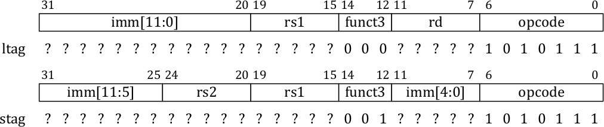
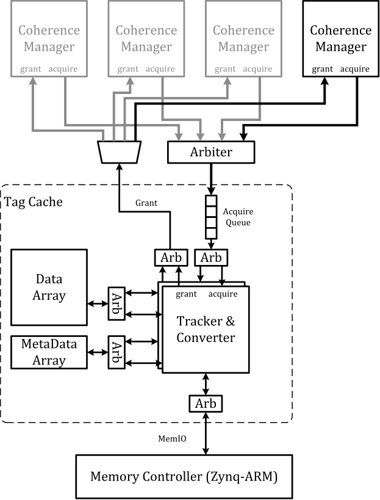
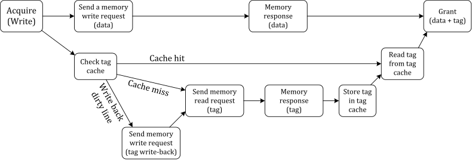

⇡ lowRISC tagged memory tutorial
Adding HW/SW support for the load and store tag instructions
Modifying the Rocket core
The Rocket core is described using the Chisel hardware construction language.
The structure of the key source files is shown below:
src/src/main/scalaLowRISCChip.scala- Top-level connectionsNetwork.scala- The network interconnecting the tiles and coherence managersPublicConfigs.scala- The configuration parameters
rocket/src/main/scalatile.scala- Top-level for a Rocket tilecore.scala- Top-level for the Rocket corebtb.scala- Branch target buffercsr.scala- The control and status register filedpath.scala- Rocket core datapathicache.scala- L1 instruction cacheinstructions.scala- Definition of supported instructionsnbdcache.scala- Non-blocking L1 data cacheptw.scala- Hardware page table walkertlb.scala- The translation lookaside buffer (TLB)
uncore/src/main/scalacoherence.scala- Definitions of the coherence protocols (MI, MEI, MSI, MESI)consts.scala- Constant defintionshtif.scala- Host/target interfacetagcache.scala- The tag cachetilelink.scale- Definition of the TileLink protocoluncore.scala- Coherence managerutil.scala- Utility functions
Step 1. Instruction encoding and decoding
The two new instructions, load tag (ltag) and store tag (stag) are encoded
using the I-type and the S-type instruction formats:

The new instruction encodings are added to rocket/src/main/scala/instructions.scala:
def LTAG = Bits("b?????????????????000?????1010111")
def STAG = Bits("b?????????????????001?????1010111")
Information on how to decode the instruction is then added to
rocket/src/main/scala/ctrl.scala. A
new object TagDecode describes how the instructions should be
decoded:
object TagDecode extends DecodeConstants
{
val table = Array(
LTAG-> List(xpr64,N,N,N,N,N,N,Y,A2_IMM, A1_RS1, IMM_I, DW_XPR,FN_ADD, Y,M_XRD, MT_T, N,N,Y,CSR.N,N,N,N,N,N,N),
STAG-> List(xpr64,N,N,N,N,N,Y,Y,A2_IMM, A1_RS1, IMM_S, DW_XPR,FN_ADD, Y,M_XWR, MT_T, N,N,N,CSR.N,N,N,N,N,N,N))
}
These definitions are almost identical to those used by the load/store
(LD and SD) instructions. The only difference is that the
mem_type field is changed from MT_D to MT_T to indicate that the
tag is being accessed. The data cache is then updated to recognise the
new MT_T memory access type.
The type MT_T is added in uncore/src/main/consts.scala.
We finally add the newly defined TagDecode to the main decoder table (rocket/src/main/scala/ctrl.scala):
decode_table ++= TagDecode.table
Step 2. Supporting tags in the memory hierarchy
L1 data cache
The L1 data cache is extended to recognise the new memory access type
(MT_T). These changes modify StoreGen and LoadGen in
rocket/src/main/scala/nbdcache.scala.
Network
Since the tags are simply inserted into larger cache lines there is no
need to revise any control logic associated with on-chip
communication. We simply increase the size of the messages
communicated (e.g. the total number of bits needed to transfer a cache
line increases from 512 to 512 + 8*4 = 544). The width of these messages
is defined in uncore/src/main/scala/tilelink.scala (see TagTLDataBits).
Tags are acquired by the tag cache (see below) in the event of a L1
data cache miss. For this tutorial tags are not supported by the
instruction cache, although support for tagging instructions will be
supported in the future. At present, tags are currently removed
(removeTag()) before cache lines are presented to the L1 instruction
cache. Similarly, tags cannot be read via the host target interface
(HTIF).
Step 3. The tag cache
The tag cache (uncore/src/main/tagcache.scala) is the final hardware
addition required to support tagged memory. It receives caches misses
or cache writeback requests from the coherence managers (as TileLink
transactions). It converts these requests to memory requests to main
memory and obtains tag bits, either from the tag cache or the tag
partition in main memory.
The tag cache itself is set-associative. A block diagram of the new tag cache module is shown below:

TileLink “acquire” transactions, indicating a read or write operation, are received by the tag cache module. The tag cache then generates the necessary requests to main memory. The series of actions performed upon receiving a read “acquire” message are shown below:
Similarly, the actions performed on a write are shown below. A line in the tag cache is allocated on a write miss.

Due to the high latency of accessing main memory, multiple TileLink transactions are handled in parallel. A transaction is serviced by a “tracker”, which maintains the current state of each transaction. In the default configuration a single tracker is instantiated.
Step 4. Updating the assembler
Two GCC cross-compilers are provided:
riscv-gnu-toolchain- Used to compile bare-metal programs and programs using the newlib library *riscv-gcc- Used to compile the RISC-V Linux kernel and any programs that are launched within RISC-V Linux
The assembler used by each must be upated to support the newly defined instructions.
In binutils/include/opcode/riscv-opc.h, we declare the two new instructions:
#define MATCH_STAG 0x1057
#define MASK_STAG 0x707f
#define MATCH_LTAG 0x57
#define MASK_LTAG 0x707f
DECLARE_INSN(stag, MATCH_STAG, MASK_STAG)
DECLARE_INSN(ltag, MATCH_LTAG, MASK_LTAG)
In binutils/opcodes/riscv-opc.c, we define the format of the new instructions:
{"ltag", "I", "d,o(s)", MATCH_LTAG, MASK_LTAG, match_opcode, WR_xd|RD_xs1 },
{"stag", "I", "t,q(s)", MATCH_STAG, MASK_STAG, match_opcode, RD_xs1|RD_xs2 },
The ltag and stag instructions will now be recognised by the
assembler, e.g. to enable them to be used in inline assembler.
Two C functions, load_tag and store_tag are also provided (in riscv-tools/lowrisc-tag-tests/env/tag.h):
int load_tag (void *addr);
void store_tag (void *addr, int tag);